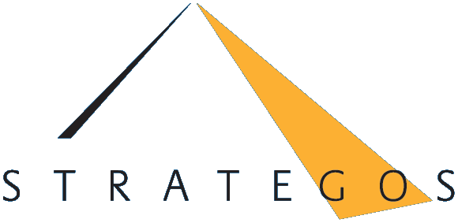
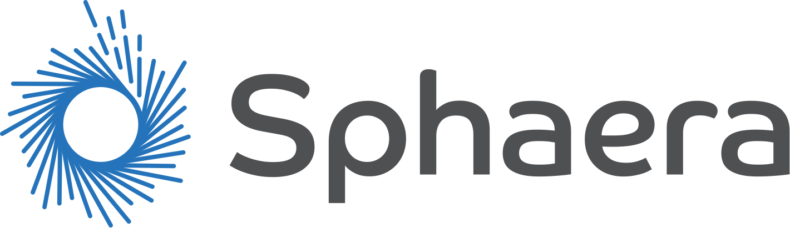
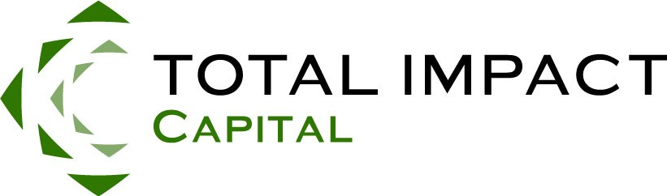

Then and now
Seven years on, 2.1 billion people still lack safely managed drinking water.
This report is published here as it was written. The figures below show how the numbers it rests on have moved since, from the most recent primary sources.
| The figure | In the report (2018) | Now |
|---|---|---|
| Children's deaths from unsafe water, sanitation and hygiene | 1800 a day“the single largest cause of child mortality in the world” | 395,000 in 2019children under five whose deaths were attributable to unsafe drinking water, sanitation and hygiene, about 1,100 a day. A newer method that also counts respiratory infections, so not directly comparable.WHO, Burden of disease attributable to unsafe WASH: 2019 update (June 2023) |
| Access to safe water and sanitation | 3.4 billionpeople lack access to safe water (SDC) | 2.1 billionpeople still lack safely managed drinking water, 1 in 4 worldwide; 3.4 billion lack safely managed sanitation (2024 data).WHO/UNICEF JMP, Progress on household drinking water and sanitation 2000–2024 (August 2025) |
Named as an urgent reminder
1800 children a day.
Lack of access to basic water, sanitation and hygiene services results in the deaths of an estimated 1800 children a day – the single largest cause of child mortality in the world.
About Project 1800
By 2030, over 40% of the worlds population will be living in severely water-stressed river basins.
Between July and December 2017, a small team of lawyers, bankers, technologists and entrepreneurs gathered to explore a better way for mobilising capital towards the Sustainable Development Goals. This website is a narrative overview of the final report, that can be downloaded in full here.
According to the Swiss Agency for Development and Cooperation (SDC), more than 3.4 billion people lack access to safe water today, making it a truly global, urgent issue with serious implications for people living at the 'base of the pyramid' (BoP). In particular, this concerns rural livelihoods, food and energy production, supporting economic growth, and ensuring the integrity of ecosystems. Further, lack of access to basic water, sanitation and hygiene services results in the deaths of an estimated 1800 children a day – the single largest cause of child mortality in the world.
The implications for global health, economics and security are profound and well understood: After climate change, water, sanitation and hygiene (WASH) generates the highest negative externalities, estimated conservatively between US$300 billion and US$600 billion annually.
Switzerland is committed to accelerating progress towards achieving Sustainable Development Goal (SDG) 6, 'Ensure Access to Water and Sanitation for All'. Among others, it is emphasising innovative approaches for service delivery, sustainable financing, private sector involvement and basin-level governance.
Given an estimated funding need of US$1.5+ trillion to address SDG 6, Switzerland's leadership is as timely as it is welcome. It is clear that novel, replicable and scalable approaches to governance, policy, advocacy and funding are required if we are to successfully intervene in what is arguably one of the greatest existential threats to human survival.
Project 1800 – named as an urgent reminder of the unnecessary childhood deaths caused by lack of access to WASH – seeks to resolve the tension between the moral imperative to achieve the Sustainable Development Goals by 2030 and the inability of existing mechanisms to do so. Its basic premise is:
Its basic premiseThe analytical, financial, legal and technological tools now exist to effectively monetise the externalities of WASH to create a people-centred, outcomes-driven, multi-stakeholder framework for facilitating the scale of collaboration required for achieving SDG 6.
The report
Eight questions
This website is a narrative overview of the final report, that can be downloaded in full here.
01 · Challenge
How do we overcome fragmentation in order to bridge the $1.5 trillion SDG6 funding gap?
In September 2015, the United Nations announced the Sustainable Development Goals; among them was a commitment to providing access to clean water and safe sanitation to all people: SDG 6.
Meeting the targets of SDG6 alone will require a tripling of the current financing to US $114 billion
or $1.5 trillion – not including the increased operating and maintenance costs
These common inefficiencies have been estimated at upwards of US$100 billion.
of private capital available in global financial markets to bridge this funding gap
While significant capital has been deployed against the SDGS, the GLASS 2017 report notes that one of the greatest barriers to their successful resolution is financing. Meeting the targets of SDG6 alone will require a tripling of the current financing to US $114 billion, or $1.5 trillion – not including the increased operating and maintenance costs. GLASS also highlights that the WASH sector is highly fragmented, with numerous government and non government organisations, corporations, and communities seeking to address this wicked problem. Yet despite these efforts the overall problem is not being resolved; to the contrary, in some regards it is only becoming larger.
Neither of these challenges are limited to WASH – they are endemic across all seventeen of the SDGs. Novelty is valued over utility, competition over collaboration and financial return over positive impact. Further, collaboration is not incentivised, and people and organisations work in silos, resulting in enormous replication of effort, and unnecessary and inefficient competition. These common inefficiencies have been estimated at upwards of US$100 billion.
Another major challenge of the development sector is that there are no royalty, annuity or other on-going revenue payments. Social innovators rarely benefit financially from the value they create. Every non-profit and social enterprise must absorb its own research and development (R&D) costs, with little or no hope of protecting its intellectual property. Nor do these actors receive system-level rewards for discovering cost-effective solutions for the people they serve, even if impact metrics validate their work. Despite recognising WASH as a systems issue, the dominant financing mechanisms result in a focus on innovation over collaboration and scale.
Today, under the auspices of a wide range of organisational and academic programming, numerous individual innovations are produced. But what works is not catalogued and analysed effectively. Nor are successful innovations deployed in a coordinated and aggregated fashion. Hence, true collaboration, is rarely achieved; true scale even less so.
Against this background, not only do existing financing mechanisms for development create a misalignment of incentives. They also lead to an insufficient proportion of available funding if we are to reach the SDGs by 2030.
Among UN agencies and other development players, there is much hope that private capital will participate in filling the SDG financing gap. There is indeed an estimated US$218 trillion of private capital available in global financial markets to bridge this funding gap. However, because the social impact market is unstructured, unstable and illiquid, asset managers have no easy ways to participate in funding solutions to difficult problems, such as SDG 6 and others.
For a more comprehensive breakdown of this challenge, please refer to a concept paper generated by four of the six primary authors of this report: From Billions to Trillions: How a transformative approach to collaboration and finance supports citizens, governments, corporations, and civil society to share the burdens and the benefits of solving wicked problems.
02 · Opportunity
Why water, sanitation & hygiene?
Against such institutional and financial challenges in the development space, the sector of water, sanitation and hygiene sector (WASH) emerges as a leading candidate for piloting a new model to scale innovation and collaboration. And, more critically, to mobilise private finance in support of it:
After climate, WASH has the highest negative externalities, estimated conservatively at between US$300bn and US$600bn annually.
Unlike other international development sectors, the major players — WHO, UNICEF, World Bank, WSP — have reached a consensus about the cost of these externalities, providing the basis for a clear metrics framework.
Water and sanitation are crucial to public health. They also affect a wide range of people and issues, including children, women, education, health, environment and economic development.
If not addressed properly, WASH issues could lead to major political instability.
It's our considered opinion that given what we already know about WASH, it's possible to develop a market based solution that transforms the cost of inaction into a trillion dollar market opportunity.
03 · Approach
What is the most effective & efficient process for approaching this work?
These principles are used to develop the framework to address the challenges mentioned above, and to inform how it will evolve. While philosophical in nature, these principles have a direct bearing on the way in which an SDG 6 market network is built, deployed and governed. They inform the legal, financial and technical structures defined in the market network described below, and serve as standards against which we continually evaluate the performance of that network.
Design Principles · Overall, there are ten design principles that Project 1800 is using because we consider them essential for this work.
Citizen Centred Design
Citizens live in communities. They interact with and are part of governments, markets and civil society. They bring their physical, intellectual and other forms of capital to bear on different functions and mechanisms that create outcomes within the SDG 6 market. This model contains seven primary elements. From the centre out, these are:
Citizens
every human individual interacting with the system
Communities
comprising (social, geographical and political) citizens
Capital
financial, material, intellectual, human and natural capital
Sectors
government, business, civil society
Functions
financing, convening, educating, catalysing, implementing, measuring, insuring, publishing, researching, commercialising, advocating, governing
Mechanisms
through which these functions operate
Markets
in this case the markets represented by the SDGs
While SDG 6 is the focus of Project 1800, this model makes it possible to construct market networks for any of the 17 UN goals. Market Networks, and the challenges informing their requirements, are expounded upon in detail in From Billions to Trillions.
04 · Metrics
How do we measure outcomes and link them to known externalities?
To be able to select and prioritise investments, one must understand and be able to quantify the social, environmental and economic benefits of social and development interventions.
As a baseline, the WASH sector is blessed with a broad consensus on what constitutes appropriate WASH service levels in different rural and urban contexts. The cost of inaction and the socio-economic benefits of WASH interventions respectively have also been calculated at a relatively detailed level. These externalities are conservatively estimated at over US$300 billion per year just considering health benefits and time savings.
To better illustrate this, we moved the financing prism beyond a purely WASH focus to capture the full social and economic impact of such an intervention. When a WASH intervention creates positive outcomes, such as access to safe water, it reduces negative externalities (for example, time lost due to sickness) or creates positive externalities (better school attendance). This means that the intervention can, in principle, be tied to the financial upside generated for governments, corporations and other parties, who have an interest in healthy and educated citizens.
The first step in monetising externalities, therefore, requires that we determine how to measure outcomes and link them to known externalities.
To make the connection between specific WASH interventions, their outcomes and their value linked to reduced negative externalities, we foresee the following three steps:
A phased impact assessment
In Project 1800, with the focus on water, sanitation and hygiene (WASH) interventions, the impacts of any intervention need to be assessed at each of three successive stages – Planning, Execution and Dissemination.
Specifying the Delta (Δ) of Improvement
Working with such broad objective data sets gives us a comparative and competitive framework in which to measure and assess all impact on externalities, in WASH and beyond. Using the above phased approach, the incremental change (the Delta of Improvement) resulting from a specific WASH intervention, or suite of such interventions, becomes visible and measurable.
Measuring impacts in the Senegal River Basin
In the Senegal River Basin (SRB), previous evaluations have shown that poor sanitation leads to significant negative economic impacts. These are valued at US$ 313 million per year (2012) for Senegal only. According to another source, it would cost Senegal US$ 43 million per year in capital costs to achieve improved sanitation for all households.
negative economic impacts of poor sanitation, Senegal (2012)
capital costs to achieve improved sanitation for all households
05 · Finance
In a social or blue equity structure, all stakeholders, including citizens and social actors become shareholders and participate financially in the outcome.
How do we make externalities tradable and provide incentives to stakeholders to coordinate their actions around desired outcomes?
To achieve outcomes at a scale that matters requires a set-up that rises above fragmentation and bilateral transactions between funders and implementers. Instead, it should enable multiple stakeholders to take different and differing economic, financial and social returns. By making risk and return fungible, we create a systems approach, where economic and social return cross-subsidise each other. Such cross-subsidisation is what lies at the heart of the multi-stakeholder outcome model.
Making Impact a Tradable Financial Product
Project 1800 proposes to build an infrastructure that is capable of mobilising and directing both private and public capital flows towards realising the goal of universal access to safe and affordable water and sanitation. The rest, in terms of who engages in financing, who is involved in ‘packaging’ and branding and who implements a specific set of interventions, is left to market dynamics. This not only allows articulating a universal measure ‘cost of social capital’, but will become the means by which to translate and replicate such capital across sectors and geographies. Note that if successful, this infrastructure could be replicated to serve other SDGs.
Blue Equity
The notion of ‘social’ or ‘blue equity’ is rooted in our understanding of value. Holding equity or participating otherwise in a structure requires one to engage in an exercise of converting or translating the value of an asset, whatever it may be, into a unit that can be owned and thus bought, sold, and otherwise traded. Traditionally, only the owners of and investors in the structure participate financially in its outcome. In a social or blue equity structure, all stakeholders, including citizens and social actors become shareholders and participate financially in the outcome. This effectively reconciles the social justice and financial meaning of the term ‘equity’.
A blue equity product is structured in a way that (a) it captures both the financial return and the monetised social return and (b) incentivises collaboration and scale on a timeline. In other words, the quicker the social impact (the Delta of Improvement) is achieved, the higher the internal rate of return (IRR). This temporal aspect of ‘urgency’ is a relatively underused tool in development finance. It also means that the greater the Delta of Improvement, the higher the IRR. Indeed, the more fragmented and inefficient a market, the higher is the potential for return, both social and economic.
Standardising the Impact Investment Process
What makes blue equity interesting is that we are crossing the threshold from the qualitative to the quantitative in a systematic way. Also, it creates a range of non-correlated investment classes. In essence, what we hear about the ‘trade-off’ of financial return for social impact in the impact investment universe becomes obviated. Every on-the-ground intervention that contributes to a positive outcome has its price or value when viewed from a systemic vantage point.
Furthermore, Blue Equity is a product that can be applied to any issue. It is fungible in the sense that the various types of liquidity available across a wide spectrum of aligned funders creates the means by which ‘units’ of input (whether they are one-off, programmatic, for-profit, not-for-profit, entrepreneurial or led by municipality or others) are made tradable. Such a financial instrument can be set up and transacted upon like any other ‘standard’ equity, but whose performance reflects the achievement of social outcomes.
06 · Governance
What is the optimal legal and governance framework for organising all stakeholders and raising investing capital?
In answering this question, we use several legal innovations that allow us to anchor the social mission in corporate entities at the global, regional / sectorial, and local scales required to reach desired outcomes in WASH. This makes it possible to bring together the wider range of stakeholders and to aggregate capital and process. And finally, this allows one to address potential conflicts of interest.
Structure
Umbrella Organisation
Only under a powerful banner with sponsored funds generating high levels of capital will players cluster and eventually hold one another accountable. For this to work, however, the system design needs to ensure that success payments rely on every player doing its part and receiving its weighted share of pay-out based on individual or group contributions.
Governance
The legal documents will hardwire the social mission in an unequivocal way so that it becomes possible to deliver different or indeed differing economic and financial returns to a range of funders and stakeholders whose shared goal is the achievement of SDG 6. The legal and governance structure proposed is inspired by innovative partnerships that already have achieved some success, such as GAVI, the Vaccine Alliance; the Global Alliance for Humanitarian Innovation (GAHI) and the Global Humanitarian Lab (GHL). These organisations exist to formalise and organise all of the entities in their field. They may serve as models to form a WASH equivalent.
The legal structure is held together by an interlocked, or 'nested' set of contracts that govern how (a) investors contribute to the special purpose vehicles, (b) how contributors to beneficial outcomes are rewarded, and (c) how contingent payments are released. While this may seem daunting, it is made possible by the use of 'smart contracts'. These are contracts that self-execute, because the terms of the agreement between parties are directly written into lines of code. The code, and the agreements contained therein, are stored on a decentralised and distributed, digital ledger.
07 · Systems
How do we build a universally accessible, equitable, scalable, replicable, and cost-effective digital infrastructure?
The digital infrastructure underpinning this market network must adhere to the design principles expressed in Approach above. Further, it must incorporate:
A methodology to quantify externalities and to measure and value incremental contributions to desired outcomes, i.e. the Delta of Improvement
Creation of the mechanism of blue equity, including interoperability with other funding and investment tools, so that existing financial and programme innovations in WASH may be better supported and leveraged
Efficient implementation and coordination of a nested local-to-global metrics, legal, and governance structure
A technology roadmap that enables connecting data through distributed ledgers to (a) track individual collaborative transactions, (b) ensure innovations by participants may be franchised or licensed by others, and (c) track and reward the contribution to outcomes from multiple stakeholders.
Most, if not all, components of this market network have already have been developed, and efforts are underway to develop a prototype focused on SDG6. Thus many of the costs and risks associated with ramping up such a signifiant engineering effort are diminished.
Design Rationale
Our design is fundamentally modular in approach, using an open, distributed architecture (both technically and operationally). This allows adding, augmenting or removing functional components and contributing actors according to evolving requirements, as guided by feedback and metrics flowing throughout the system. This essential aspect of the market network architecture supports both healthy competition and systemic innovation among those who share the objective of impact through implementation. The market network is purposefully designed to mitigate the failures of other market-based approaches to wicked problems, including nepotism, corruption, unearned privilege and vendor lock-in. Should a partner or process fail to deliver, or no longer be optimal or necessary as the situation evolves, it may be removed or replaced with another solution or partner that better serves the needs of the market as a whole.
Functional Requirements
Many different technologies are driving the way other sectors are consolidated, redefined and reinvented. Some of these can be applied to the vision and concept of Project 1800:
These requirements are explained in detail in the full report.
08 · Future · What comes next?
"Nearly every problem has been solved by someone, somewhere. The challenge of the 21st century is to find out what works and scale it up."
Bill ClintonBy integrating innovations in technology, metrics, finance and the law as well as technology platforms developed in the last ten years in an open framework, we seek to make a better and more cost-effective use of social sector organisations and hybrids as well as impact investment to deliver social entrepreneurial innovation at a scale that matters. Furthermore, we are placing the community and social stakeholders at the centre of the model, not least to include the most vulnerable members of society. This captures not only the economic value of social entrepreneurial innovation, but also monetises that value. Thus, equity is understood in both senses, financial and social.
The legal, financial, technical and sector experts consulted during this scoping process find the proposed framework and architecture to be technically feasible, provided that influential partners in the global development community demonstrate the necessary leadership required to support this process.
The core team behind Project 1800 are convening a roundtable discussion on the development of a Market Network for SDG6 in Bonn on June 11, as a precursor to a two-day strategic immersion with aligned partners at World Water Week in Stockholm in August. If you are interested in attending either of these two events, please get in touch.
Additionally, we have already commenced work on a prototype of an SDG6 Market Network.
There remain a number of issues requiring further investigation, including:
refining the methods for estimating the ‘Delta’ in country-specific contexts;
ground-truthing the process for identifying interventions that truly address BoP needs as opposed to those that can be achieved quickly; and the scaling of the community feedback mechanism;
integrating the legal framework with the distributed ledger technology to allow it to become highly transparent, scalable and cost-effective;
defining the exact nature and form of the umbrella organisation, which will emerge out of the first set of use cases; and
translating this material into simpler language for multiple audiences.
Partners
The core organisations behind Project 1800
Artha Networks Inc.
Artha Networks Inc., a program associated with Rianta Capital Zurich, is designed to pursue the goals of realising sustainable development in India and beyond.
Read more
The word ‘artha’ is a Sanskrit term that refers to ‘purpose’, ‘prosperity’ and the ‘pursuit of wealth’. Rianta Capital Zurich is Artha’s main investor and de facto ‘parent’. It is a Zurich-based separate entity and is comprised of a team with a focus on appraising direct private equity investment opportunities for their clients. The clients of Rianta Capital are a range of offshore entities from which the Singh family may benefit; the head of the family is Tom Singh, who is founder of a well-known UK retail business called New Look. The objective of the Artha program and related investment activities is to apply the rigor of commercial thinking to the challenges of development throughout India, particularly in the context of marginalized rural communities and villages. Artha strives to support those who are validating the market niche for providing important goods and services to the ‘base of the pyramid’, with an emphasis on those who work the land and who are producers.

Strategos
Strategos is a boutique consulting practice founded in 1997 and based in Lausanne, Switzerland.
Read more
Its mission is to help its clients identify and work on fundamental business, strategy and/or organisational questions with the aim to build enabling and sustainable solutions. Through eleven partners, it provides a range of services such as strategy consulting, complex project management, organisational development, participatory leadership & dialogue and coaching. Among its clients are public services of the Swiss Confederation, various cantonal and city administrations, corporations such as Conforama or Migros, local, national and international foundations and associations (cinfo, YWCA, UICC) as well as SMEs and start-ups or the Lausanne and Geneva teaching hospitals (CHUV and HUG) and Universities (UNIL, UNIGE, EPFL).

Sphaera
Sphaera is a social benefit technology company and advisory firm created to address the question of how we can accelerate the pace of social change in the face of climate change and other urgent challenges of the 21st century.
Read more
Centrally concerned with the creation of infrastructure that advances solutions from idea stage to implementation at scale, Sphaera collaborates with a number of aligned technology companies, including Artha Networks, icoloi, and Induct to build a modular, open, global architecture for facilitating the flow of innovations and capital along the social value chain. Particularly pertinent to this project, Artha started as a proprietary deal sourcing and diligence platform for impact investments in social enterprises in India and parts of Asia, and has since been white-labelled for use by the Inter-American Development Bank, and we are now working on a solution sourcing and investing platform for a network of European foundations. Induct is currently developing an innovation ecosystem for the government of Norway, with a view of sourcing those across networks larger than the Induct platform.

Total Impact Advisers
Total Impact Advisers is part of Total Impact Capital. It specialises in identifying sourcing and developing private investment opportunities that are socially and financially attractive.
Read more
We see global problems as win-win global opportunities for the social sector and the private sector with the need to apply “market-based solutions for philanthropy” – a now much used term that we actually coined in a joint report in 2005 with UBS. In essence, we seek to create market demand for social need. Looking at models beyond the classic VC-PE models with a focus on outcome models, we seek to design innovative, sustainable financial solutions and strategies for governments, corporates and non-profits to support their missions. This has included the conceptualisation of the Social Impact Bond, one of the first blended value models, the DB / Ashoka / IAPB Eye Fund as well as working with former regulators to change (and pass into law) the legal frameworks to stimulate social impact investment. Our clients are major foundations, UN organisations, social entrepreneurs and corporates.
Contributors
Numerous experts contributed to the success of the project across five work streams
Bill Kelly
Ashoka (Board)
Chuck Muckenfuss
Gibson, Dunn & Crutcher LLP (rtd)
Marc Owens
Loeb & Loeb LLP
Arthur Wood
Total Impact Advisers
Astrid Scholz
Sphaera
Special thanks to the late Stephen Lloyd, and Michael Webber for their input into how to make this structure applicable internationally
Audrey Selian
Artha Networks, Inc.
Sjef Ernes
Aqua for All
Jacqueline Barendse
WASTE
Guy Hutton
UNICEF
Fredrik Galtung
Integrity Action
Michael Green
Social Progress Imperative
Cameron Burgess
Ed Giradet
Global Geneva
Violette Ruppanner
Strategos
Linzi Fidelin
Contact
Project 1800
Towards a market network for a water-secure world.